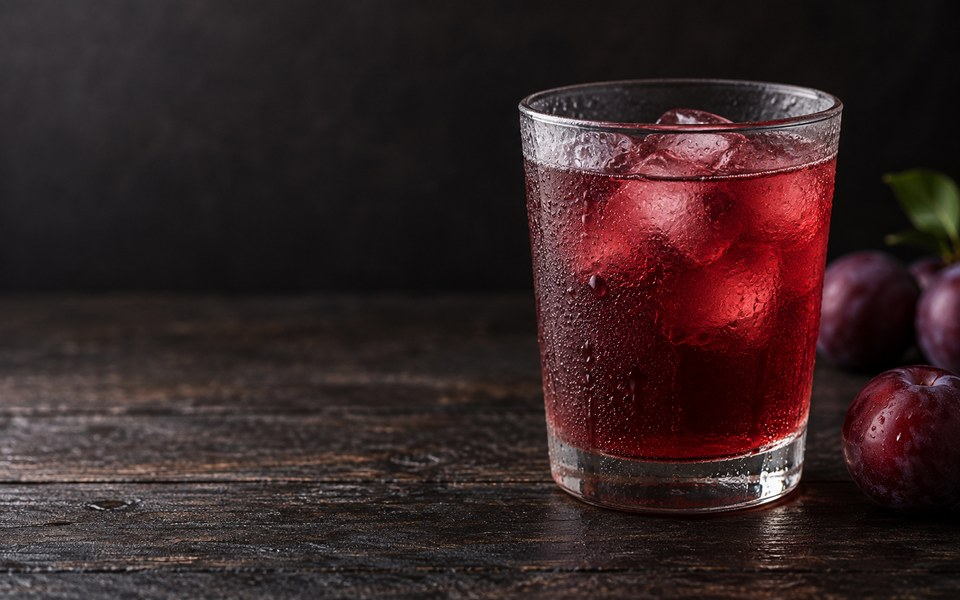

No. 01
為什麼要冰著喝
關於溫度，和它對味道做的事

同一瓶酸梅湯，室溫喝和冰鎮喝，其實是兩種東西。
室溫的時候，甜會先浮出來，把其他味道蓋掉一層；桂花的香氣散得快，還沒送到鼻子就淡了；酸味被壓在後面，整杯喝起來是糊的。冰過之後，順序會重新排好——甜退一步，酸站到前面來，桂花香變得清楚，最後留在喉嚨的才是甘草的回甘。
這不是玄學。低溫會降低舌頭對甜味的敏感度，讓酸與香氣相對突出；同時減緩香氣揮發，讓它是「慢慢放」而不是「一次散光」。所以我們從裝瓶那一刻就冷藏，一路冷鏈送到你家門口，也希望你收到就先冰起來。
冰過之後，順序會重新排好——甜退一步，酸站到前面來。
最理想的溫度大約在 4–8°C，也就是冰箱冷藏室的溫度。如果趕時間，倒進加了冰塊的杯子也可以，只是味道會稍微被稀釋——那也沒關係，夏天有夏天的喝法。
一個小提醒：開瓶前搖一搖。八種食材熬出來的東西，靜置久了會有細微沉澱，那是正常的。搖勻，整瓶的味道才會回到它該有的樣子。